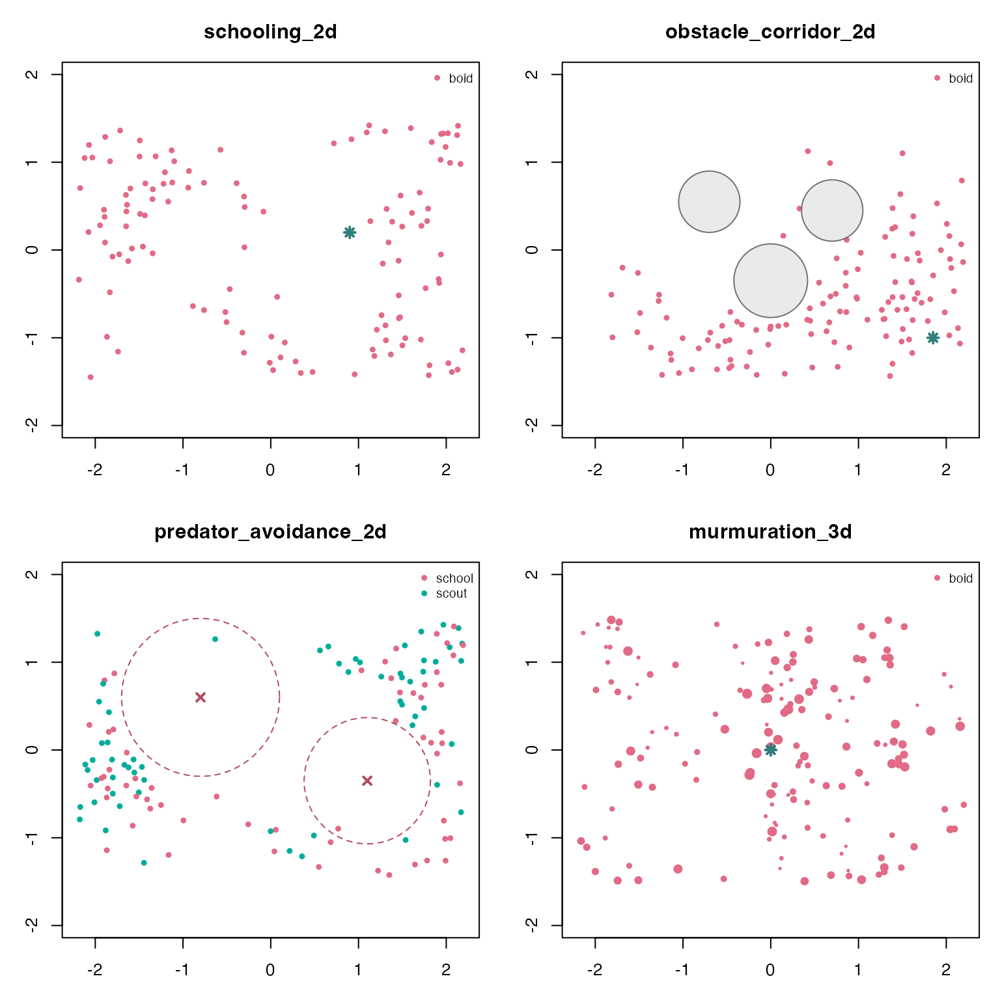

boids4R includes named scenarios for common swarm
motifs: compact schools, obstacle corridors, predator avoidance, and 3D
murmurations. The examples below run each scenario with a fixed seed,
then summarize the recorded frames with plain data-frame operations.
library(boids4R)
gallery <- data.frame(
scenario = c(
"schooling_2d",
"obstacle_corridor_2d",
"predator_avoidance_2d",
"murmuration_3d",
"mixed_species_3d"
),
n = c(120L, 120L, 120L, 160L, 150L),
steps = c(60L, 70L, 70L, 55L, 55L),
record_every = c(5L, 5L, 5L, 5L, 5L),
seed = c(111L, 112L, 113L, 114L, 115L),
stringsAsFactors = FALSE
)
sims <- setNames(
lapply(seq_len(nrow(gallery)), function(i) {
boids_scenario(
gallery$scenario[i],
n = gallery$n[i],
steps = gallery$steps[i],
record_every = gallery$record_every[i],
seed = gallery$seed[i]
)
}),
gallery$scenario
)Compare recorded swarms
A simulation stores every recorded boid as one row per frame. This makes it straightforward to compute summaries without any renderer-specific object model.
final_frame <- function(sim) {
frames <- as.data.frame(sim)
frames[frames$frame == max(frames$frame), , drop = FALSE]
}
mean_spread <- function(frame) {
center <- colMeans(frame[, c("x", "y", "z"), drop = FALSE])
distance <- sqrt(
(frame$x - center["x"])^2 +
(frame$y - center["y"])^2 +
(frame$z - center["z"])^2
)
mean(distance)
}
mean_nearest_neighbor <- function(frame) {
if (nrow(frame) < 2L) return(NA_real_)
coords <- as.matrix(frame[, c("x", "y", "z"), drop = FALSE])
distances <- as.matrix(stats::dist(coords))
diag(distances) <- NA_real_
mean(apply(distances, 1L, min, na.rm = TRUE), na.rm = TRUE)
}
scenario_summary <- function(sim) {
frames <- as.data.frame(sim)
final <- final_frame(sim)
data.frame(
scenario = sim$scenario,
dimension = sim$dimension,
boids = length(unique(final$id)),
species = paste(sort(unique(final$species)), collapse = ", "),
recorded_frames = length(unique(frames$frame)),
mean_final_speed = round(mean(final$speed), 3),
mean_final_spread = round(mean_spread(final), 3),
mean_nearest_neighbor = round(mean_nearest_neighbor(final), 3),
stringsAsFactors = FALSE
)
}
do.call(rbind, lapply(sims, scenario_summary))
#> scenario dimension boids species
#> schooling_2d schooling_2d 2d 120 boid
#> obstacle_corridor_2d obstacle_corridor_2d 2d 120 boid
#> predator_avoidance_2d predator_avoidance_2d 2d 120 school, scout
#> murmuration_3d murmuration_3d 3d 160 boid
#> mixed_species_3d mixed_species_3d 3d 150 kite, swift, tern
#> recorded_frames mean_final_speed mean_final_spread
#> schooling_2d 13 1.185 1.413
#> obstacle_corridor_2d 15 0.920 1.468
#> predator_avoidance_2d 15 0.932 1.757
#> murmuration_3d 12 1.188 1.478
#> mixed_species_3d 12 1.192 1.700
#> mean_nearest_neighbor
#> schooling_2d 0.174
#> obstacle_corridor_2d 0.150
#> predator_avoidance_2d 0.139
#> murmuration_3d 0.255
#> mixed_species_3d 0.308The same summaries can be split by species. This is useful for mixed flocks or cases where scouts and schooling agents are initialized together.
species_speed <- do.call(rbind, lapply(sims, function(sim) {
final <- final_frame(sim)
out <- stats::aggregate(speed ~ species, final, mean)
out$scenario <- sim$scenario
out$mean_final_speed <- round(out$speed, 3)
out[, c("scenario", "species", "mean_final_speed")]
}))
species_speed
#> scenario species mean_final_speed
#> schooling_2d schooling_2d boid 1.185
#> obstacle_corridor_2d obstacle_corridor_2d boid 0.920
#> predator_avoidance_2d.1 predator_avoidance_2d school 0.936
#> predator_avoidance_2d.2 predator_avoidance_2d scout 0.928
#> murmuration_3d murmuration_3d boid 1.188
#> mixed_species_3d.1 mixed_species_3d kite 1.198
#> mixed_species_3d.2 mixed_species_3d swift 1.197
#> mixed_species_3d.3 mixed_species_3d tern 1.181Snapshot plots
The frame table is also enough for quick base-R diagnostics. The helper below draws a final-frame x/y projection, including obstacles, attractors, and predator influence radii when the scenario defines them. For 3D scenarios this is an overhead projection; point size varies with the z coordinate.
scenario_palette <- function(species) {
keys <- sort(unique(species))
stats::setNames(grDevices::hcl.colors(length(keys), "Dark 3"), keys)
}
draw_world_marks <- function(world) {
if (nrow(world$obstacles)) {
graphics::symbols(
world$obstacles$x, world$obstacles$y,
circles = world$obstacles$radius,
inches = FALSE,
add = TRUE,
fg = "gray45",
bg = grDevices::adjustcolor("gray70", alpha.f = 0.28)
)
}
if (nrow(world$predators)) {
graphics::symbols(
world$predators$x, world$predators$y,
circles = world$predators$radius,
inches = FALSE,
add = TRUE,
fg = "#B24C63",
lty = 2
)
graphics::points(world$predators$x, world$predators$y, pch = 4, col = "#B24C63", lwd = 2)
}
if (nrow(world$attractors)) {
graphics::points(world$attractors$x, world$attractors$y, pch = 8, col = "#2F7E79", lwd = 2)
}
}
draw_snapshot <- function(sim) {
final <- final_frame(sim)
world <- sim$world
palette <- scenario_palette(final$species)
z_span <- diff(range(final$z))
cex <- if (z_span > 0) 0.45 + 0.85 * (final$z - min(final$z)) / z_span else 0.75
graphics::plot(
final$x, final$y,
xlim = world$bounds["x", ],
ylim = world$bounds["y", ],
asp = 1,
xlab = "x",
ylab = "y",
main = sim$scenario,
col = palette[final$species],
pch = 16,
cex = cex
)
draw_world_marks(world)
graphics::legend(
"topright",
legend = names(palette),
col = palette,
pch = 16,
bty = "n",
cex = 0.75
)
}
old_par <- graphics::par(mfrow = c(2, 2), mar = c(3, 3, 3, 1))
draw_snapshot(sims$schooling_2d)
draw_snapshot(sims$obstacle_corridor_2d)
draw_snapshot(sims$predator_avoidance_2d)
draw_snapshot(sims$murmuration_3d)
graphics::par(old_par)Hand off to ggWebGL
When ggWebGL 0.4.0 or later is installed, the same
simulation object can be converted into a timeline-aware WebGL
specification. The adapter keeps current boids visually dominant, draws
recent history as faint trails, colours velocity vectors by species by
default, and includes visible rings for obstacles and predator influence
zones. This step is optional and leaves the core simulation object
renderer-neutral.
if (requireNamespace("ggWebGL", quietly = TRUE) &&
utils::packageVersion("ggWebGL") >= "0.4.0") {
ggWebGL::ggWebGL(
as_ggwebgl_spec(sims$mixed_species_3d, trail_length = 30),
height = 520
)
}